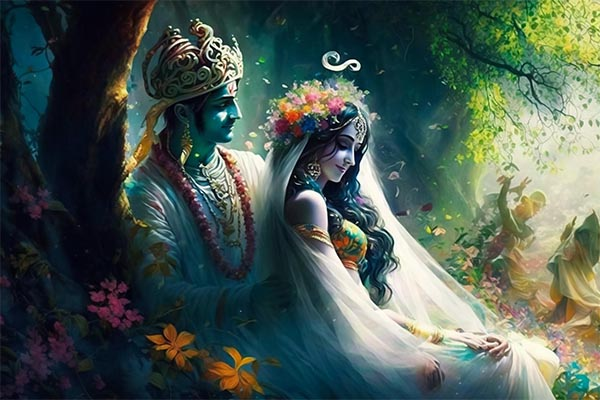
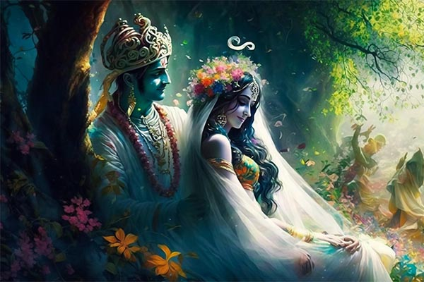

Revering the Divine: A Tribute to Shree Krishna
Shree Krishna, a central figure in Hinduism, is revered as the eighth avatar of Bhagwan Shree Vishnu. He was born in Mathura and raised in Vrindavan, India. Krishna's life, filled with divine leelas (miracles) and teachings, is recounted in Hindu scriptures like the Bhagavad Gita and the Mahabharata. He played a pivotal role in the Kurukshetra War, where he served as a charioteer and spiritual guide to Arjuna, imparting profound wisdom on duty, righteousness, and devotion. Krishna is often depicted as a blue-skinned deity playing the flute, symbolizing love, joy, and the union of the individual soul with the divine. He is also adorned with a peacock feather on his head and holds a flute in his hands.


 

Life Events of Shree Krishna
Birth of Lord Krishna
Lord Krishna's birth in Mathura is a divine tale. It occurred on a stormy night in the prison cell of his parents, King Vasudeva
Read MoreVasudev carried Baby Krishna to Gokul
Vasudeva carried baby Krishna on his head across the flooded Yamuna River, protecting him from King Kamsa's threat.
Read MoreSakatasura Vadh at 3 months
At just 3 months old, he demonstrated his divine power by defeating Sakatasura, a malevolent demon
Read MoreTrinavarta Vadh at 1
At the tender age of one, the divine child achieved a remarkable feat by vanquishing Trinavarta, a wicked demon who had taken the
Read MoreAt Age 2: Vatsasura Conquered
At the age of two, Lord Krishna encountered Vatsasura, a malevolent demon disguised as a calf, while playing in the pastures
Read More
Bakasura Vadh at 4
At the tender age of four, Lord Krishna confronted Bakasura, a menacing crane demon, in the village of Vrindavan. Bakasura had
Read More
Conquered Aghasura at the Age of 5
At the tender age of five, Krishna encountered Aghasura, a malevolent serpent demon. Aghasura, assuming the guise of a massive python, sought to devour Krishna and his companions.
Read More
Krishna Subdues Dhenukasura, Age 6
At the age of six, Krishna confronted Dhenukasura, a vile demon in the form of an ass. Dhenukasura terrorized the forests of Vrindavan, and Krishna, along with his friends, decided to put an end to this menace.
Read MoreDefeated Kaliya Serpent at 7
At the tender age of seven, Lord Krishna faced the venomous Kaliya serpent in the waters of the Yamuna River.
Read MoreNalakuvara and Manigriva Liberation
When Nalakuvara and Manigriva, the demigods, concluded their prayers, young Lord Krishna, the ruler of Gokula, playfully bound to a wooden grinding mortar by Mother Yashoda, graced them with a smile. He acknowledged that He was aware of how His devoted Narada Muni had saved them from their pride, born of their extraordinary beauty and divine heritage. Their encounter with Narada had liberated them from potential damnation.
Read MoreStealing cloths of gopis
The Gopis bathed in the holy river Yamuna naked. It is an offence.. So, Krishna wanted to teach them lesson. So, He played like this.
Read More
Lifting Govardhana hill at age of 7
One of the most iconic episodes in Lord Krishna's life is his act of lifting Govardhan Hill. This awe-inspiring feat occurred when the people of Vrindavan sought protection from torrential rains unleashed by Lord Indra
Read More
Butter Theft Feat (Makhan Chori)
At the age of two, Lord Krishna encountered Vatsasura, a malevolent demon disguised as a
Read MoreRasa Dance Leela
At the age of 8, Lord Krishna performed the Rasa Dance, a divine and enchanting event in Hindu mythology. In Vrindavan, under the moonlit sky, Krishna danced with the gopis (cowherd maidens)
Read More
Krishna Slaying Kamsa at 11
At the age of 11, Lord Krishna confronted and defeated the tyrant King Kamsa. Kamsa, driven by fear of a prophecy, had imprisoned Krishna's parents, Vasudeva and Devaki. Krishna's arrival in Mathura to challenge Kamsa marked a pivotal
Read MoreKrishna's Marriage to Rukmini at 16
At the age of 16, Lord Krishna's divine love story with Princess Rukmini unfolded. Rukmini, deeply in love with Krishna, sought to marry him. However, her brother Rukmi opposed the union and planned to marry her off to another prince, Shishupala.
Read MoreJarasandha's Wrath and the Rise of Dwarka
Jarasandha, fueled by rage over his son-in-law Kansa's death at the hands of Krishna, sought vengeance. His daughters, now widowed, fueled his fury further. Jarasandha made 17 relentless attempts to conquer Mathura, but Krishna's valor consistently thwarted him.
Read More
Sudama's Sacred Visit to Dwarka
Sudama, a humble Brahmin and dear friend of Lord Krishna from their childhood, faced extreme poverty. Despite his family's dire condition,
Read MoreJarasandha Vadh
Jarasandha, a formidable warrior and obstacle in the path of Emperor Yudhishthira's grand offering, had to be removed. The Pandavas, including Krishna, Bhima, and Arjuna, disguised themselves as brahmins and journeyed to Magadha to confront Jarasandha.
Read More
Shisupal Vadh at Rajsuya Yagya
Shishupala, a cousin of Lord Krishna and an enemy of the Yadava clan, At the royal assembly in Yudhishthira's Rajasuya Yagna, Shishupala publicly insulted Krishna and Draupadi.
Read MoreKrishna's Divine Intervention to Protect Draupadi
During the game of dice in the Kaurava court, Draupadi, the wife of the Pandavas, was dragged into the assembly by Dushasana at the instigation of Duryodhana. She sought help from her husbands and elders,
Read More
Krishna on Pandavas side
Before the Mahabharata war, both "Arjuna" & "Duryodhana" (the two opponents in the war) went to "Lord Krishna" for His help in the war.
Read More
Vishvarupa's Revelation to Arjuna
During the Kurukshetra War, Lord Krishna bestowed a divine vision, known as Vishvarupa or the Universal Form, upon Arjuna. As Arjuna stood on the battlefield filled with doubt and moral dilemma, Krishna revealed his cosmic, multifaceted form.
Read More
Krishna and the Bhagavad Gita
The Bhagavad Gita, often referred to as the Gita, is a 700-verse Hindu scripture that forms a profound part of the Indian epic Mahabharata. In this sacred text, Lord Krishna imparts spiritual wisdom and guidance to the warrior prince Arjuna
Read MoreKey Lessons from Bhagavad Gita
- Live in the present
This is one of the most important lessons kids can learn from Krishna. Even though Krishna focuses on and plans for the future, he never fails to live in the present. He practised mindfulness, the act of focusing and living in the moment instead of worrying about the past or the future. This skill helps one make memories and live a less stressful life.
- To be dutiful
TDespite being the Lord of the universe, Krishna never shied away from his duties. It is one of the things he is well-known for. Krishna stressed the importance of completing your duties by yourself. He taught people to fulfil their duties without focusing on the outcome. He willed people to enjoy the journey rather than be driven by the results.
- Never give up on what you love
Even though he was burdened with saving the kingdom, being a good king, and answering his devotee’s every prayer, Krishna always made time for what he loved. Krishna’s love for his flute and music is not surprising to anyone who has read about him. Krishna never stopped pursuing his love for music and it brought him peace even in the midst of a war. Regardless of what is going on in your life, it is always important to spare time for the things you love.
- Be humble
One would expect the Lord of the universe to be haughty or above all but that is never the way Krishna behaved. He always stayed humble and respected his elders. This character trait made him loveable and earned him devotees from all over the world. Krishna showed that you do not win over people by power but you win them over by being kind and showing everyone respect.
- Sometimes sacrifice is necessary
Krishna had to make some tough decisions during the battle of Kurukshetra including making some sacrifices to win the battle. Sometimes, life demands sacrifices, be it getting out of your comfort zone or putting your ego second. In order to succeed in life, you should be able to sacrifice and compromise at times for the bigger picture.
- Everyone deserves respect
Krishna respected every person, animal, or living being he encountered, He believed that everyone deserves respect regardless of their societal status or job. Spiritually, we are all the same and Krishna showed us that by treating everyone with the same respect.
- The importance of friendship
Krishna valued his friendships greatly which is evident by his love for his childhood friend Sudhama. When Krishna found out that Sudhama was struggling to put food on the table, he gifted him with shelter, food, and luxury. This can teach kids a lesson or two about being loyal to our friends or being there for them in their time of need.
- Happiness does not come from materialistic things
This is one of the most imperative lessons you can teach your child. Krishna always preached about finding happiness within oneself as opposed to relying on other people or materialistic things. While a new toy or a video game might put a smile on your child’s face, it is temporary. True happiness lies in the little things in life and the sooner your children realise that, the happier they will be.
- Everything happens for a reason
Krishna was a big believer in fate and destiny. While one should not always rely on fate, it helps to think that behind everything, there is a reason. Whether good or bad, everything happens for a reason. The key lies in staying calm and trusting yourself and the universe.
- Unconditional love is the key
Everything Krishna did was fuelled by unconditional love. His kindness, humility, and affection for people around him were because of his unconditional love. Regardless of what curveball life throws at you, if you lead by love, you will never fail.
Shree Krishna's Key Figures


Legacy
Lord Krishna's teachings continue to inspire millions, promoting a life of righteousness, self-realization, and devotion to God.